You can install this app!
HOW TO INSTALL?
×
Instructions
I'm a new participant. What do I need to do?There are three things for you to do:
1. Fill out the consent form which we need to start you off. This should take about 2-3 minutes. You can access the consent form by clicking here.
2. Check out the study instructions below.
3. Each time you experience or witness an instance of digital harm, open the Digital Harms app and report the it to us.
Thanks so much for joining this study, we really hope your participation will help us to understand and reduce digital hostility.
To make it easy for you, we have an app that you can install. This app will give you an easy to use button on your phone to press every time you receive a scam call or message. The app is very secure, and it will never take any data from your phone that you don’t enter into the app.
To download and install, follow these steps:
• On your smartphone go to https://www.digitalharmsproject.com.au/
• Click the install button (top of the page, orange bar) for instructions.
- For ANDROID phones, look for the “More” menu. This is the “three dots” menu in Chrome but could be different depending on your browser. Next, select “Add to Home Screen,” and then follow the prompts.
- For APPLE / iOS phones, look for the share button in Safari, select “Add to Home Screen,” and then follow the prompts.
If for any reason you cannot install the app, please simply visit the link above to inform us of any instances of digital harm you experience or witness.
Each time you experience or witness something online you think may be a digital harm, we would like you to fill out a few short details by opening the app or clicking on the secure link we have sent to you as a text/SMS.
The interface asks a few brief questions, and should take no more than two minutes to complete.
First step
Press the big red button that says "+ Report an instance of digital harm". This will open the reporting interface.
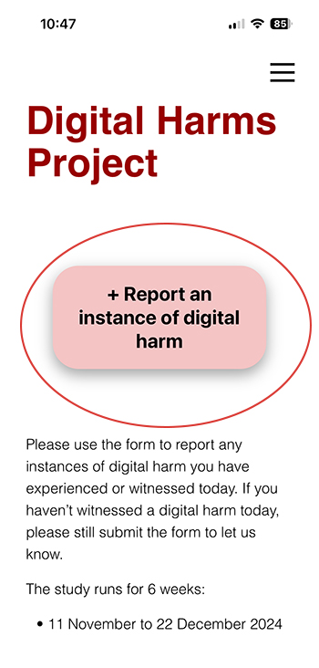Please enter your unique identifier we have sent you by SMS. This helps us to match your experiences with the survey data you’ve already provided, so we can better map where and when people are targeted.
Please also enter your initials. This is so we can error-check against any typo in the unique identifier and to help you with any technical issues that may arise.
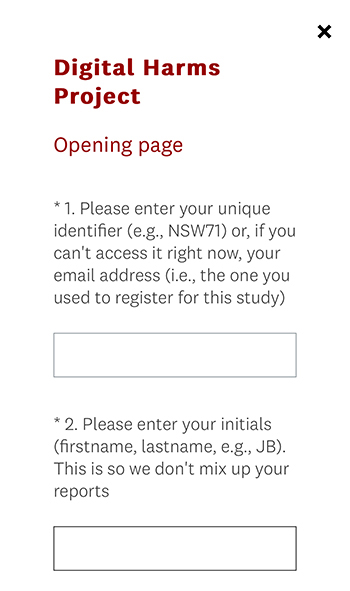What did you experience or witness? Finally, we ask what kind of digital harm you would like to report?
If you remember, it’s helpful to let us know at the end of each day if you haven’t experienced or witnessed digital harm, that way we can better track the days when people are most targeted. Hit “No I am letting you know I didn't experience or witness any digital harms today” and that will end the questions for the day.
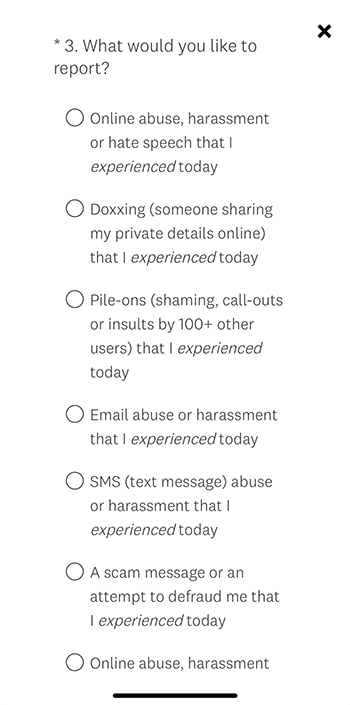Second step
Here, we ask what platform or app the digital harm occured on.
If you can't find the platform/app on the list provided, select "Other" and specify the platform.
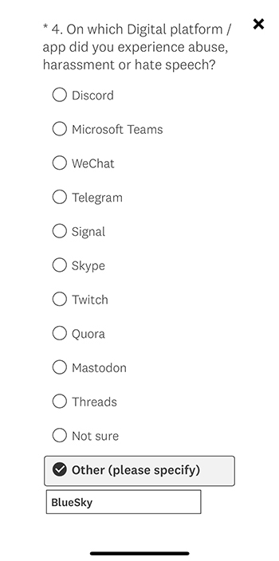Secondly, we will ask you a few questions about the nature of the digital harm:
- how certain are you that this was abuse, harassment or hate speech.
- do you know the person or persons who perpetrated the harm.
- the type of abuse or harassment that occured.
- how you'd describe the abuse.
Third step
Please take a screenshot of the abusive content and upload it here. See the question below for how to do that on Android or iOS phones. The process is very simple.
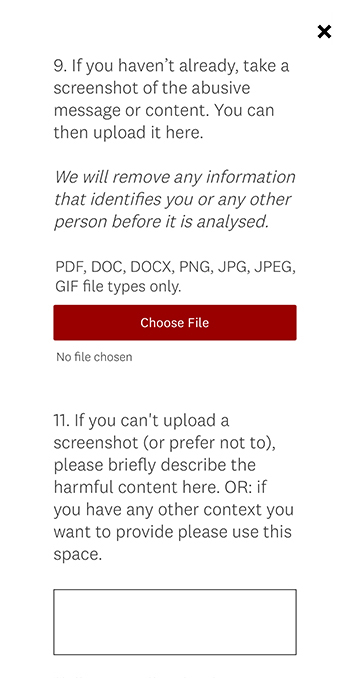Alternatively, if you do not wish to upload a screenshot, you can provide some details about what the harm was about in the box at the bottom of the page.
Fourth step
We will ask a few very quick questions about reporting and attitudes:
— Have you reported or do you plan to report the harm?
— Who did you report to? Or why did you choose not to report?
— How did the digital harm make you feel?
— Do you believe the harm should be taken off the platform?
Fifth step
Finally, we will ask if there is anything else you'd like to tell us about the incident.
This question is optional, but if you feel like you have more to say about the harmful content, this is a great place to say it.
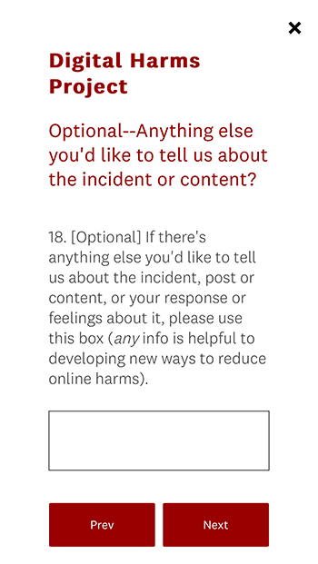Each time you experience or witness content online you believe may be harmful, we would like you to upload a screenshot of this content and any responses you give.
How to take a screenshot on an iPhone with Face ID?
1. Press the Side button and the Volume up button at the same time.

2. Quickly release both buttons.
3. The screenshot will automatically be saved into your phone’s Photo Library.
How to take a screenshot on an iPhone with Touch ID?
1. Press the Side button and the Home button at the same time.

2. Quickly release both buttons.
3. The screenshot will automatically be saved into your phone’s Photo Library.
How do I upload the screenshot to the study?
1. When you get to the part of the questionnaire that asks about a screenshot, please press the red bar “Choose File”.
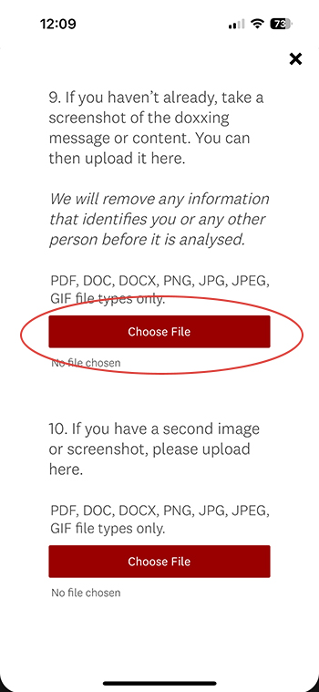2. Select “Photo Library”. This will take you to the most recent photos in your Photo Library.
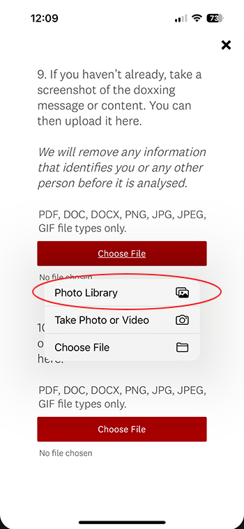3. Select the screenshot of the harmful content and press "Done". It will upload automatically. Continue to the end of questionnaire.
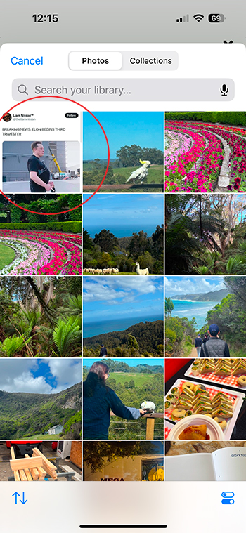4. If the first screenshot doesn't fit all the content, you may also upload a second screenshot in the following question.
Alternative step
If you are having trouble adding a screenshot – or you prefer not to add one – please use the next question box to describe the harmful content.
Any information will help the study, and that will help us develop ways to reduce digital harm online
Each time you experience or witness content online you believe may be harmful, we would like you to upload a screenshot of this content and any responses you give.
How do I take a screenshot?
1. Press the Power and Volume down buttons at the same time.
2. If that doesn't work, press and hold the Power button for a few seconds. Then tap Screenshot.
If neither of these work, go to your phone manufacturer's support site for help.
How do I upload the screenshot to the study?
1. When you get to the part of the questionnaire that asks about a screenshot, please press the red bar “Choose File”.
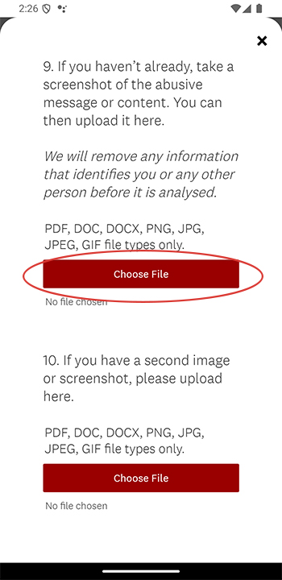2. Select the option for "Media picture".
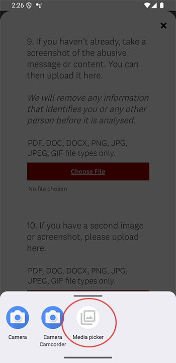3. This will open a file menu (usually to your recent files list where you’ll see any recent screenshots). Here, you can select the right screenshot.
If the interface doesn’t show your screenshot then you may need to navigate using the buttons at the top or side to your “Screenshots” folder (which is sometimes contained inside the “Pictures” folder).
Alternative step
If you are having trouble adding a screenshot – or you prefer not to add one – please use the next question box to describe the harmful content.
Any information will help the study, and that will help us develop ways to reduce digital harm online
If you don’t witness harmful digital content on any particular day, we ask that you still go into the app and, on the opening page, select “None, I am just letting you know that I didn't experience or witness any digital harms today”.
This will let us know you didn’t see any harmful content online today, and that you’re still engaged in the study so we can pay you.
After the completion of the study, you will be paid a gift card of $100 in appreciation of your time and support.
To be paid, we need regular interaction from you, even if it is just to say you didn’t encounter any harmful or offensive online content.
Just after the six-week study is complete, we will send you a link to a secure form to answer a few close-off questions. RMIT University will then process the gift card, which should take about 4-6 weeks to be sent to you.
To make sure you’re eligible for payment, remember to submit the form every couple of days, including the days in which you didn't experience or witness harmful content online, by clicking the “None, I am just letting you know that I didn't experience or witness any digital harms today” button.
If you are having any technical issues, please fill in the brief form here and one of the team will be in touch by call or email, usually within 24 hours.
You can also email us with any questions at XXXXXXXXXX@gmail.com
Please remember that if your wellbeing was harmed by what you experienced or witnessed, it is okay to seek support.
You may wish to consult our emotional support guide, here.